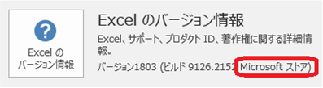

(※ 2018 年 5 月 15 日に Japan Office Developer Support Blog に公開した情報のアーカイブです。)
こんにちは、Office 開発サポート チームの中村です。久しぶりの投稿になります。
このタイトルの記事では、新しい提供方法である「Microsoft ストア版 Office 2016」における、これまでの Office との違いについて、Office 開発観点から記載していきたいと思います。今後もこのテーマでは何度か投稿することになると思いますが、今回はまず、DLL 読み込み動作の違いについて記載します。
1. Microsoft ストア版 Office 2016 とは？
Office 開発観点の話の前に、そもそも、Microsoft ストア版 Office 2016 とはどういうものかを簡単に説明します。
Office 2016 には色々なライセンス契約方式がありますが、これは単に契約上のみの違いではなく、販売方法によって、Office アプリケーション自体も異なる仕組みで提供されています。現在、以下の 3 種類の提供形式があります。
1-1. クイック実行 (C2R) 形式
Office 365、市販パッケージ (FPP)、以前のプレインストール (PIPC) がこの提供形式です。また、MSDN サブスクリプション契約でダウンロードできる検証用の Office 2016 も (プロダクト キーの入力などの認証方式はボリュームライセンスに一見見えますが) クイック実行形式です。
インターネットなどからサイズの小さいインストーラをダウンロードして実行し、インストールの中で実行モジュールのダウンロード等を行います。最低限の準備ができると Office を使い始めることができ、バックグラウンドで残りのインスト―ルが行われることから、クイック実行と呼ばれます。
Office 2016 では、現在このクイック実行形式が主流となっており、製品の修正、新機能の追加などは、基本的にこのクイック実行形式に対して行われます。
クイック実行形式は、Microsoft Application Virtualization (App-V) のテクノロジに基づいてストリーミングおよび仮想化されて提供されています。詳細は以下の公開情報をご参照ください。
参考)
タイトル : クイック実行の概要
アドレス : https://technet.microsoft.com/ja-jp/library/jj219427.aspx
1-2. MSI インストーラ形式
ボリューム ライセンスがこの提供形式です。
以前からある、DVD ディスクなどに焼かれた MSI インストーラを用いてインストールする形式で、インストールされる実行モジュールなどは全てインストーラに含まれており、オフラインでインストールできます。
Office 2016 では、MSI インストーラ形式は長期安定稼働版と位置付けており、セキュリティ更新以外の修正、新機能の追加はほとんど行われません。このため、最新の更新を適用しても、C2R 形式で利用できる機能が含まれていないことがあります。
1-3. Microsoft ストア版 Office 2016 (Centennial版)
今回の記事で説明する提供形式です。現時点でこの形式で Office 2016 が提供されているのは、最近のプレインストール (PIPC) 版の一部と、Windows 10 S が搭載された Surface Laptop のいずれかとなります。
参考)
タイトル : Office 2016 プレインストール版 (PIPC) 製品インストール - Office 2016 セットアップ
アドレス : https://www.microsoft.com/ja-jp/office/2016/pipcsetup/pipc_setup.aspx
タイトル : Surface Laptop のご紹介
アドレス : https://support.microsoft.com/ja-jp/help/4037229/surface-meet-surface-laptop
この形式では、Office 2016 は Microsoft ストアを通じてインストールや更新を行います。他のストア アプリと同様、この方法で提供される Office 2016 はユニバーサル Windows プラットフォーム (UWP) でパッケージ化されています (デスクトップ ブリッジという方法を用いています)。このような仕組みを Centennial とも呼ぶため、Microsoft ストア版 Office は「Office Centennial」とも呼ばれます。UWP パッケージ化されたアプリは、ファイル システムやレジストリなどが UWP パッケージ独自の構成となり、また、動作上もそのままアプリを実行する場合とは異なる点があります。
Microsoft ストア版 Office にも、不具合の修正や新機能の追加は行われていきます。更新は Microsoft ストアによって管理されます。
参考)
タイトル : ユニバーサル Windows プラットフォームの紹介
アドレス : https://docs.microsoft.com/ja-jp/windows/uwp/get-started/universal-application-platform-guide
タイトル : デスクトップ ブリッジの内側
アドレス : https://docs.microsoft.com/ja-jp/windows/uwp/porting/desktop-to-uwp-behind-the-scenes
比較的新しい技術になるため、情報がまだまだ充実しておらず申し訳ありませんが、このブログでは、Microsoft ストア版 Office 2016 で他の提供形式と異なる動作となる点や留意点などについて、Office 開発観点で注目すべき点を随時ご紹介していきたいと思います。
補足 : Office 2016 提供形式の見分け方
自身の端末がどの提供形式の Office 2016 を使っているかを確認する方法については、以下をご参照ください。
タイトル : クイック実行形式 (C2R) と Windows インストーラー形式 (MSI) を見分ける方法
アドレス : https://blogs.technet.microsoft.com/officesupportjp/2016/09/08/howto_c2r_or_msi/
タイトル : FAQ よく寄せられる質問
アドレス : https://www.microsoft.com/ja-jp/office/2016/pipcsetup/pipc_faq.aspx
該当箇所 : “セットアップ前” – “プレインストールされた Office 2016 のアプリ形式を確認する方法がありますか。”
Office アプリケーションを起動して、[ファイル] タブ – [アカウント] の以下の箇所でも確認できます。(以下は Excel の Microsoft ストア版の例)

図1. [アカウント] メニューでの提供方式の表示
2. Microsoft ストア版 Office 2016 の DLL 読み込み動作
さて、本題です。Microsoft ストア版 Office 2016 で C2R 版や MSI 版と動作が異なる点として、DLL 読み込み時の検索パスが異なります。
例えば、VBA で以下のように記述するとします。
1 | Private Declare Sub MyFunc Lib "TEST.dll" () |
この VBA を実行するとき、Office は TEST.dll をいくつかのフォルダから検索し、見つかったら DLL を読み込み、MyFunc を呼び出すことができます。
C2R 版や MSI 版では、以下の公開情報で紹介されている OS の既定の動作に則ってフォルダを検索します。
タイトル : Windows が使用する DLL 検索パス
アドレス : https://msdn.microsoft.com/ja-jp/library/7d83bc18.aspx
<検索対象フォルダ (上記公開情報より抜粋)>
1.実行中のプロセスの実行形式モジュールがあるフォルダー。
2.現在のフォルダー。
3.Windows システム フォルダー。 このフォルダーへのパスは、GetSystemDirectory 関数が取得します。
4.Windows ディレクトリ。 このフォルダーへのパスは、GetWindowsDirectory 関数が取得します。
5.環境変数 PATH 内に記述されたフォルダー。
Microsoft ストア版 Office では、上記赤字で示した 2. / 4. / 5. のフォルダは検索されません。
以下の公開情報で述べられたカレント フォルダから DLL を読み込む危険性などを考慮し、セキュリティ強化を図る目的で、Microsoft ストア版 Office ではこのような動作になっています。
タイトル : DLL プリロード攻撃を防止するためのライブラリの安全な読み込み
アドレス : https://support.microsoft.com/ja-jp/help/2389418
したがって、例えば Excel マクロ ファイルと一緒に DLL を配布して同じフォルダに格納し、マクロ ファイル内でファイルの格納フォルダに移動 (ChDir) した上で DLL を冒頭のサンプル マクロのようにパスを指定せずに読み込む、といった動作を期待している場合、ストア版 Office では期待した通りに動作しません。
3. 対応方法
3-1. プログラムで検索パスを指定する
DLL を読み込む処理の前に、SetDllDirectory API などを用いて、DLL 検索パスを明示的に指定してください。
タイトル : SetDllDirectory function
アドレス : https://msdn.microsoft.com/en-us/library/windows/desktop/ms686203.aspx
または、VBA の Declare ステートメントで DLL をフルパスで指定して読み込むようにします。ただし、DLL の構成がシンプルなものであればこの方法で問題ありませんが、DLL からさらに別の DLL を読み込むような場合は、ここでも検索パスの問題が生じますのでご注意ください。
DLL 読み込み後、必要に応じて SetDllDirectory API を Null 指定で呼び出して検索パスをリセットできます。
DLL 格納パスが複数のパスに分かれている場合などは、Windows 8 以降では AddDllDirectory API も利用できます。
タイトル : AddDllDirectory function
アドレス : https://msdn.microsoft.com/en-us/library/windows/desktop/hh310513.aspx
3-2. C2R 版 Office に変更する
PIPC 向けに提供された Microsoft ストア版 Office 2016 は、再インストールによって C2R 版の Office をインストールすることができます。
再インストール手順については、以下の公開情報をご参照ください。以下で「デスクトップ アプリ版 Office 2016」と呼ばれるものが、C2R 版の Office 2016 を指します。
タイトル : Office 2016 プレインストール版 (PIPC) 製品インストール - 再インストール
アドレス : https://www.microsoft.com/ja-jp/office/2016/pipcsetup/pipc_re_setup.aspx
Microsoft ストア版 Office 2016 からデスクトップ アプリ版 Office 2016 への入れ替えについては、FAQ にも記載がありますので合わせてご参照ください。
タイトル : Office 2016 プレインストール版 (PIPC) 製品インストール - FAQ よく寄せられる質問
アドレス : https://www.microsoft.com/ja-jp/office/2016/pipcsetup/pipc_faq.aspx
注 :
Surface Laptop の場合は、Windows 10S OS 自体がストア アプリのみの動作を許可する仕組みとなるため、デスクトップ アプリ版 Office 2016 をインストールすることはできません。
今回の投稿は以上です。
本情報の内容 (添付文書、リンク先などを含む) は、作成日時点でのものであり、予告なく変更される場合があります。